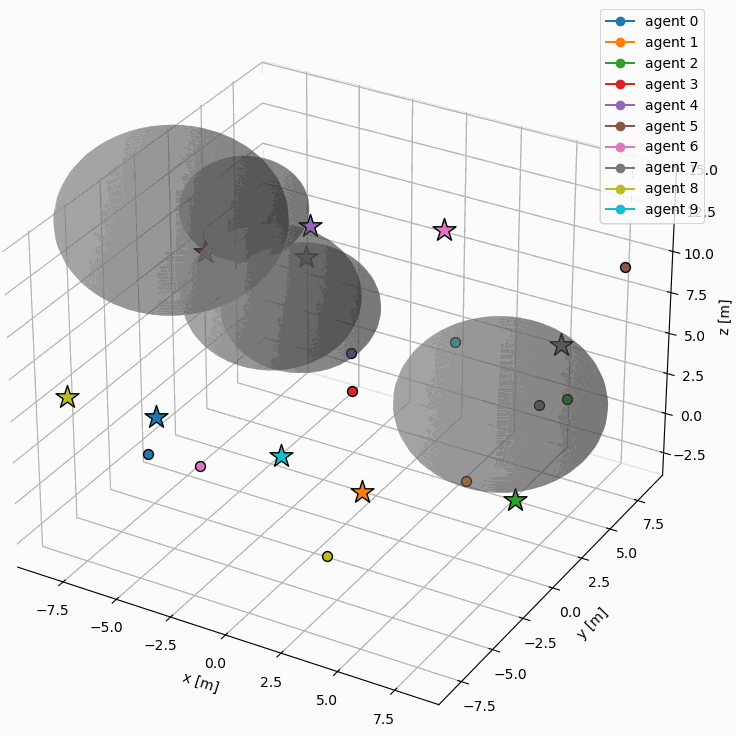
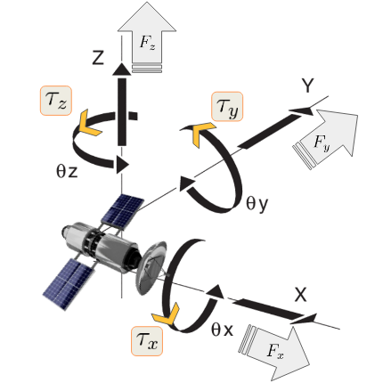
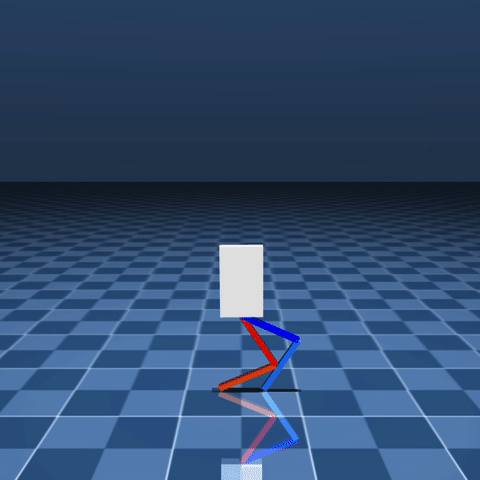
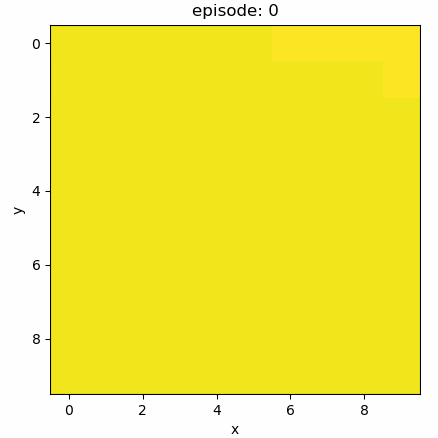
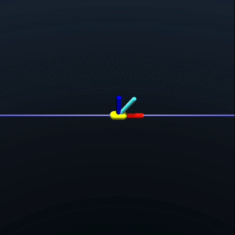
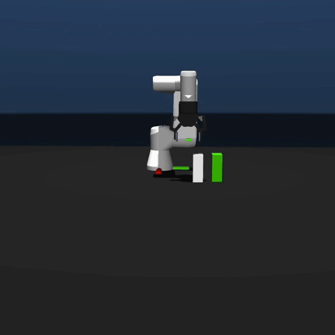
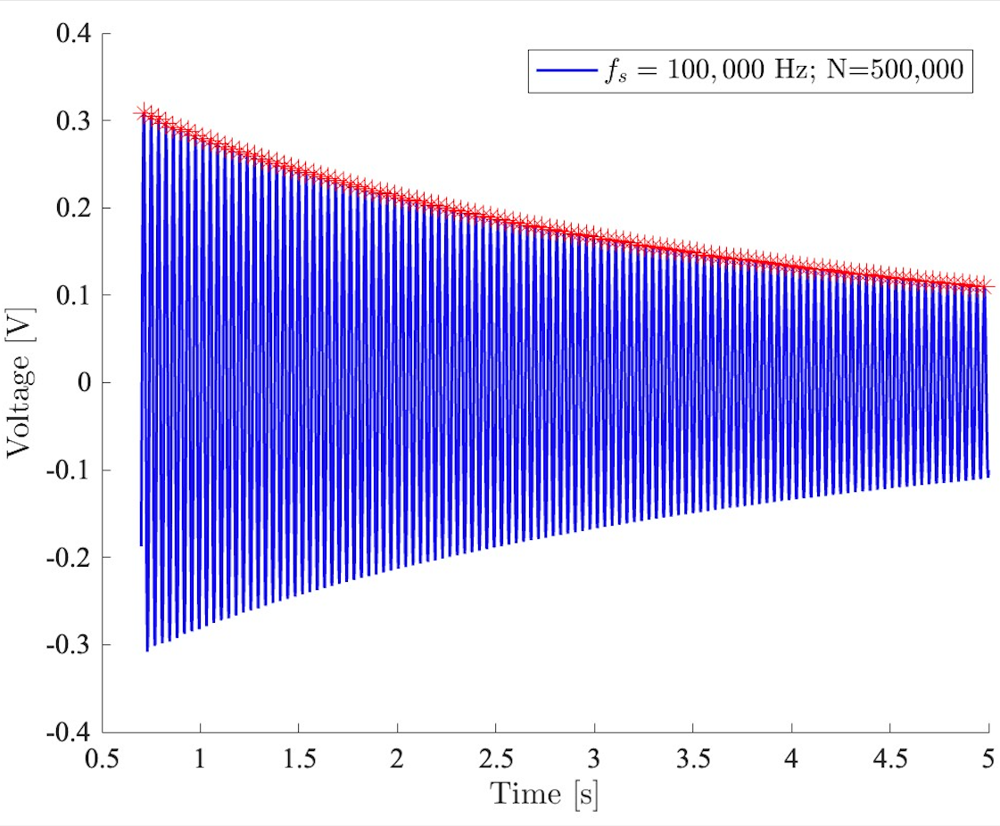
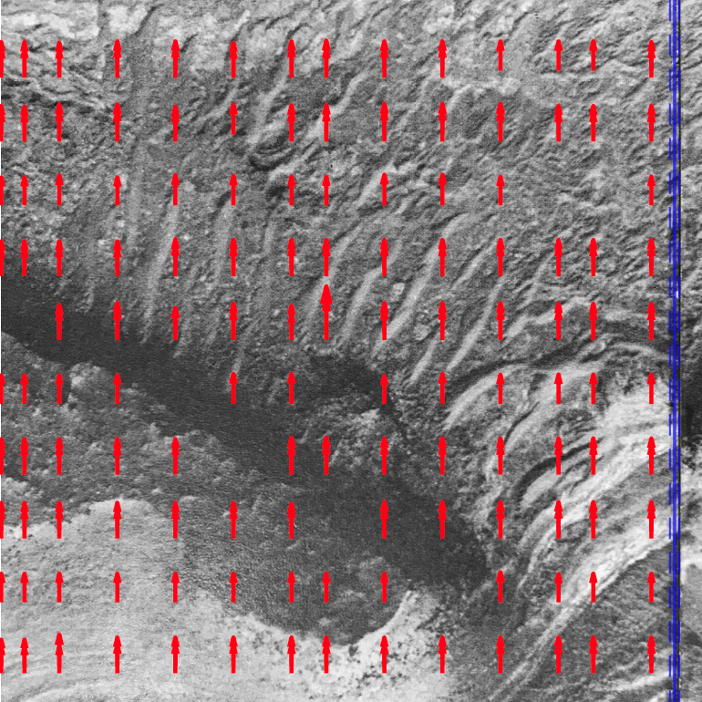
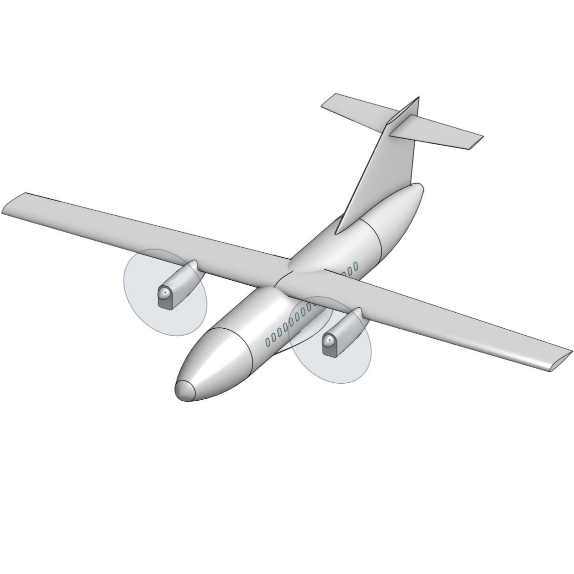

Derek Chibuzor
I am an Autonomy - Controls Engineer at Neros Technologies.
I am also a M.S. Mechanical Engineering student at the University of Southern California (USC) and a member of the Dynamic Robotics and Control Laboratory.

News
- (May 2025) Graduated Cum Laude from USC with a B.S. in Aerospace Engineering. 🎉
- (April 2025) Awarded the Frederick Angus Gross Endowed Scholarship.
- (Feb 2024) Featured in Amazon Science for my work with Amazon SURE on on CLINGERS.
- (January 2023) Selected for the Amazon SURE RISE mentorship program with Amazon Distinguished Scientist Gerard Medioni.
Projects
My interests are in robotics, dynamics, control, optimal control, GNC, flight mechanics, trajectory optimization, system identification, deep learning, reinforcement learning, and system integration.

Diffusion Modelling for Oracle-Guided Multi-mode Policies
Dynamic Robotics and Control Laboratory (2025-)
Motion generation for the Unitree G1. Based on Object Motion Guided Human Motion Synthesis (OMOMO) and General Motion Retargeting (GMR).

Distributed and Decentralized Model Predictive Control
Personal Project (2025-)
Distributed and Decentralized Model Predictive Control (DMPC) implementations for arbitrary multi-agent systems using CasADi.

Distributed MPC for co-ordinated RPO between multiple spacecrafts
ASTE 599 - Extreme Environment Robotic Autonomy (2025)
Comparative analysis of Distributed and Decentralized Model Predictive Control (DMPC) for co-ordinated rendezvous and proximity operations (RPO).


GridWorld
Personal Project (2025-)
GridWorld environment with implementations of various tabular reinforcement learning algorithms (e.g., Q-Learning).




End-to-end System Identification
Dynamic Robotics and Control Laboratory (2025)
Task-agnostic framework for end-to-end system identification via gradient- and sampling-based hybrid optimization.
Rally Technologies
E-Commerce Startup (2025)
Rally connects university students through a secure marketplace, making it easy to buy, sell, and trade within your campus community.

Dual-Axis Solar Array Articulation
AME 441aL - Senior Projects Laboratory (2024)
Design, build, and test a 3U CubeSat-compatible sun-seeking solar array articulation module to increase solar power generation.

Euler-Bernoulli Beam Theory Spring-Mass-Damper Model
AME 341bL - Mechoptronics Laboratory II (2024)
Evaluation of Euler-Bernoulli beam theory in the 2nd order spring-mass-damper (SMD) model of a spring-attached cantilever beam.

Neural Network Library
Personal Project (2024-)
Extensible implementations of various neural network architectures (e.g., CNN, RNN, LSTM, Transformer) from scratch.

Predictive Maintenance Classification with AI4I 2020 Dataset
AME 404 - Computational Solutions to Engineering Problems (2024)
Multi-class classification of machine failure types. The dataset consists of 10,000 samples representing various operational states of industrial machinery, with features describing temperature, speed, torque, and tool wear.

Automatic Terrain Collision Avoidance System (Auto-TCAS)
Personal Project (2024)
Inspired by Lockheed Martin's Automatic Ground Collision Avoidance System (Auto-GCAS), Auto-TCAS performs stall recovery maneuvers via PID control.

Digital Image Correlation (DIC)
AME 341bL - Mechoptronics Laboratory II (2024)
Implementation of Digital Image Correlation (DIC) algorithm to compute fault line displacements and locations using the Zero-mean Normalized Cross-Correlation (ZNCC) method.


ISS Access Report
ASTE 280 - Foundations of Astronautical Engineering (2023)
Calculates ISS elevation and azimuth over a user-specified period of time at a user-specified latitude and longitude.
Publications
- Rajguru, A., Eyre, E., Ebrahimi, M., Barnhart, D., Adam, R., Griffith, T., Chibuzor, D., Haq, S., Nguyen, J., and Le, J., “CLINGERS: Optimizing RPO Ease for Assembly Operations”, AAS/AIAA Astrodynamics Specialist Conference, Aug 7-11, 2022, AAS 22-580.